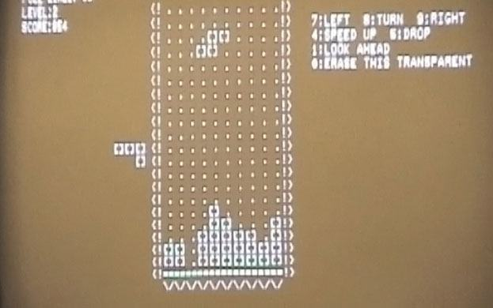

HISTÓRIA DO JOGO
O jogo
Você já deve ter ouvido em algum lugar o nome "tetris". A verdade é que esse jogo de montar blocos coloridos é mundialmente conhecido, sendo ele, um clássico dos videogames. Tendo conquistado homens, mulheres, crianças e até mesmo idosos, tetris é um jogo simples e de jogabilidade fácil, consistindo em montar blocos para formar uma linha que se quebrará assim que feita. Tetris tem um conjunto de peças com 4 blocos, que torna o jogo complexo o suficiente pra ser jogado, mas simples o suficiente para que qualquer um possa jogar.
O início de tudo
Tetris nem sempre foi bonito e colorido como é hoje. Desenvolvido na união soviética no contexto de guerra fria pelo programador Alexey Pajitnov, em 1984, tetris foi desenvolvido para um computador soviético chamado de Elektronika 60. Todo o design do jogo era feito com caracteres como exclamação e colchetes.
Alexey teve a ideia de desenvolver esse jogo baseado nos estudos de jogos matemáticos e poliominós do professor Solomon W.Golomb. Juntamente a Dmitri Pavlovsky e Vadim Gerasimov, eles desenvolveram o jogo e portaram para o IBM PC, o que foi uma ótima jogada para que o jogo se tornasse popular rapidamente.
Vadim Gerasimov portou o jogo quando tinha apenas dezesseis anos e trabalhava em uma academia. O jogo foi distribuído gratuitamente na Hungria, mesmo lugar em que foi programado para Apple II e Commodore 64.
O jogo até então estava nas mãos do estado russo quando houve uma grande briga pelos direitos de tetris no ocidente quando o jogo foi descoberto. Em 1986, várias copias piratas de tetris se espalhavam pela hungria. Robert Stein se deparou com uma dessas cópias e contatou o governo soviético para comprar o jogo, mas não teve resposta. Ele então fez uma proposta direta para Pajitnov e, antes de fechar o negócio, começou a revender as licenças do jogo como se fosse sua.
Stein teria passado o direto dos jogos para a empresa inglesa Mirrorsoft, que pertencia a Robert Maxwell, que revendeu para a Atari e a Spectrum Holobyte. Os jogos foram distribuidos e vendidos junto a sua icônica trilha sonora criada por Lorne Balfe, mas nada foi pago a Pajitnov.

Problemas e reviravoltas
Tetris chamou a atenção, 1988m de um empresário e desenvolvedor chamado Henk Rogers. Ele gostou tanto do jogo que resolveu, sozinho, ir até a cortina de ferro atrás dos direitos desse jogo. Viajando para moscou sem sequer uma reunião marcada, ele encontrou uma tradutora no lobby do hotel, que ele sabia ser uma espiã da KGB.
Rogers se encontrou com o chefe da Elektronorgtechnica, Nikolai Belikov. Esse encontro proporcionou diversas reuniões e negociações. Nesse econtro, Rogers conheceu Pajitnov. Era a primeira vez que o russo encontrava um outro desenvolvedor de jogos, uma vez que graças a opressão do governo comunista soviético, aquela profissão não existia. Sendo apenas um consultor, o desenvolvedor do jogo Tetris havia cedido os direitos do jogo para o estado russo para evitar dor de cabeça.
No fim de tudo, após a sua visita, Rogers conseguiu os diretos do jogo para consoles e videogames, oferecendo 1,2 milhões de dólares americanos e 1,30 dólares por cada cópia vendida. Ele passou a licença pra Nintendo. O uníco problema é que Maxwell já havia vendido os direitos de videogames de tetris para a Atari, direitos os quais ele não possuia.
Dentros dos processos legais a Atari acabou ficando com o jogo inicialmente, chegando até a lançar o jogo para o console. O que aconteceu foi que cerca de um mês depois a justiça americana determinou que apenas a Nintendo tinha direitos legais sobre fabricação, então, mandou que recolhessem e destruíssem todos os cartuchos.
Já um anos depois, a Nintendo lançou um novo console... o Game Boy e, com ele, o jogo tetris que vinha com a compra do console.
O fim
Até então Pajitnov não havia recebido nada pelo o que havia feito. Ele se mudou para os Estados Unidos no final da URSS e lá começou a trabalhar com Henk na produção de jogos. Lá ele criou um aplicativo chamado El-fish, que era quase um descanso de tela que transformava o monitor em um aquário. Por esse trabalho, ele acabou sendo contratado pela Microsoft.

Trabalhando na Microsoft tocou cinco projetos da empresa, sendo eles: Microsoft, Entertainment Pack: The Puzzle Collection (1997), Microsoft Pandora's Box (1999), Microsoft A.I. Puzzler (2001), Hexic (2003), Hexic HD (2005). Ele saiu da empresa em 2005, depois de completar Hexic HD e hoje, juntamente a Henk, é dono da Tetris Company. Essa empresa administra os direitos comerciais do jogo que, até hoje, é um fenômeno.